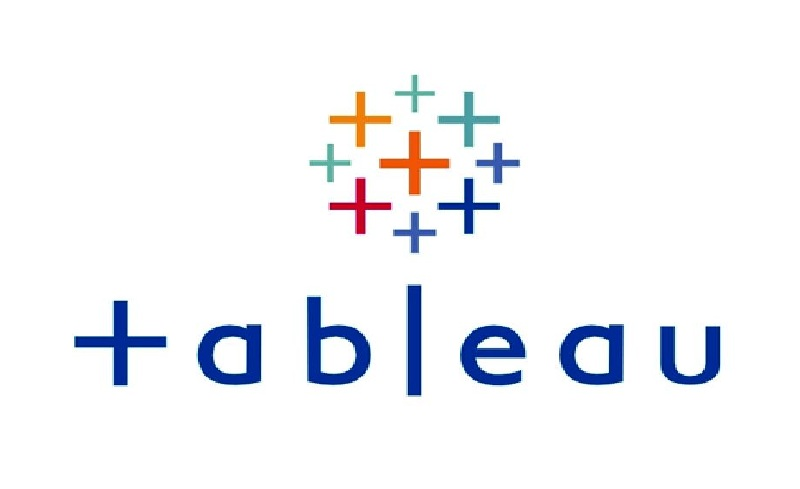
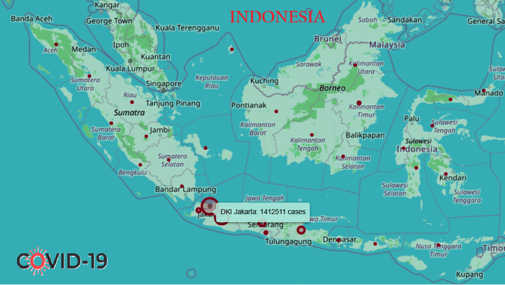

This project demonstrates my skills in data cleaning and transformation using SQL Server. The goal was to prepare a raw dataset for analysis by performing various cleaning and transformation tasks.
The following tasks were performed: standardize date format, populate missing data, breakout out address columns, standardize values, remove duplicates, and reorder columns.

This project is an exploratory data analysis (EDA) of COVID-19 deaths and vaccination data using SQL Server. The analysis aims to uncover insights and patterns related to COVID-19 cases, deaths, and vaccination rates across various countries and continents. The data covers the time range from January 2020 to April 2021.

This is my Tableau portfolio, showcasing various dashboard projects.

This project is an Exploratory Data Analysis (EDA) project on COVID-19 cases across different provinces in Indonesia. The analysis covers the time range from March 2020 to September 2022, providing insights into the pandemic's progression throughout the country.

This project focuses on performing a comprehensive financial data analysis using Python. The analysis covers various aspects, including descriptive statistics, time range analysis, monthly trends in revenue, profit, and expenses, identification of months with the highest and lowest profit, and the development of a simple predictive model using linear regression to forecast revenue based on costs.